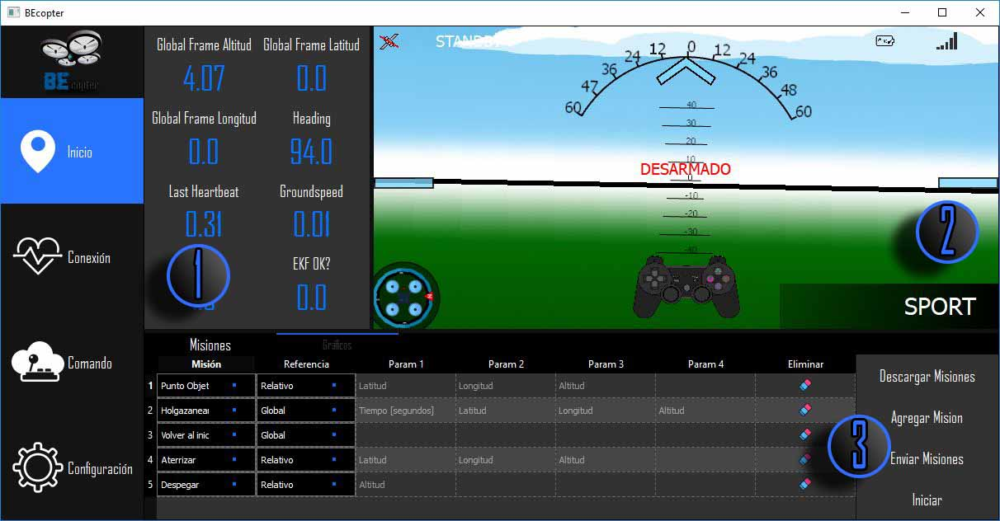
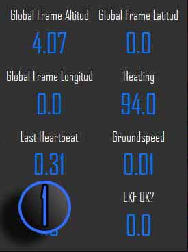
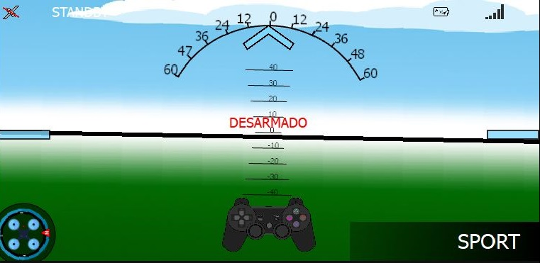
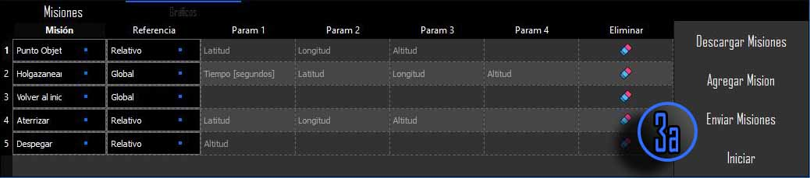
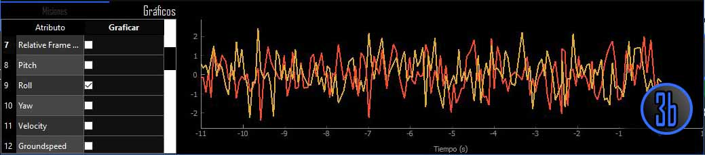
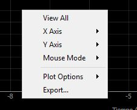

Pestaña de Inicio¶
La pestaña de Inicio de BEcopter es la responsable de mostrar la información proveniente del vehículo de varias maneras y además, es la encargada de enviar los comandos al vehículo para realizar las respectivas maniobras. En esta pestaña podemos subdividirla en regiones, de la siguiente manera
{kind=link}
1. Botonera¶
La región n° 1 contiene un conjunto de botones, los cuales pueden ser pulsados y tener la opción de elegir el parámetro que se desea mostrar según la necesidad del piloto. Estos son una alternativa a la gráfica mostrada en la región 3.b Gráficos pero con la diferencia que se pueden observar de manera instantánea los cambios de valores.
2. HUD ( Head Up Display )¶
{kind=link}
El HUD o según su respectiva traducción al español «Pantalla de cabeza arriba» es la encargada de mostrar gráficamente el estado actual del vehículo, con esto hacemos
referencia que simula una vista en primera persona desde el vehículo con el fin de que el piloto vea el estado del mismo. Dentro del HUD podremos observar varios
elementos gráficos que dará información en tiempo real de lo que esta sucediendo con nuestro vehículo. Estos elementos son:
GPS¶
Este elemento gráfico mostrará el estado del GPS, en caso de no ser aceptable la señal percibida mostrará un «satélite» con una línea cruzada, lo que indica que dicha señal no es aceptable. Para solucionar el problema, es aconsejable que ubique el vehículo en un espacio libre de obstáculos, como edificios, árboles, fuentes de electromagnetismo, etc.
Estado del vehículo¶
El estado del sistema de vehículo es un aspecto importante a tener en cuenta, ya que si no se encuentra en condiciones no va a hacer posible despegar o recibir misiones. Esta es una lista de los estados que puede tener el vehículo:
- UNINIT: El estado es desconocido o todavía no se ha iniciado.
- BOOT: El sistema se encuentra arrancando.
- CALIBRATING: Un proceso de calibración se encuentra ejecutando, por lo tanto, no es posible arrancar.
- STANDBY: Se encuentra en la espera de comandos.
- ACTIVE: El sistema está activo y podría estar en el aire ejecutando maniobras.
- CRITICAL: El sistema está en un modo de vuelo anormal. Sin embargo, todavía puede maniobrar.
- EMERGENCY: Aparece cuando se ha perdido el control sobre el vehículo. De esta manera, este podría estar realizando un aterrizaje forzoso.
- POWEROFF: Se está iniciando el proceso de apagado del sistema.
Batería¶
Mostrará información del nivel de carga de la batería, en caso de encontrarse conectado a una fuente de alimentación mostrará en su interior las iniciales de DC Corriente Directa.
Señal¶
El nivel de señal estará basado según el último heartbeat o pulso recibido en BEcopter, entre mayor sea duración del último pulso menor será la calidad de señal recibida.
Ángulo de banco¶
Este instrumento indica al usuario la inclinación en el eje x o Roll del vehículo, con la particularidad de que se encuentra limitado en el rango [-(-60°), 60°] y en caso de sobrepasar este limites se indicará con una flecha en color rojo a modo de precaución y estabilización.
Líneas de referencia¶
Estas líneas de referencia tienen el fin de mostrar en pantalla el pitch que está teniendo el vehículo en tiempo real, de la misma forma que el ángulo de banco, esta muestra un rango limitado de [-40°,40°].
Indicador de rumbos¶
O también conocido como giróscopos direccionales, es un instrumento que indica el rumbo que lleva la aeronave. Este instrumento se alinea en base a los polos magnéticos de la tierra según los datos obtenidos del magnetómetro dentro del vehículo. Por lo cual nos estaría indicando según «la rosa de los vientos» si nos estamos dirigiendo en dirección al Sur, Norte, Noreste, etc.
Icono de Josytick¶
Este icono representando un joystick, tiene la finalidad informar al piloto del vehículo que el modo de vuelo que tiene seleccionado el vehículo acepta comandos desde el Joystick, por lo tanto es posible controlar el vehículo en modo manual.
Modos¶
Dependiendo del objetivo del vehículo existen distintos tipos de vuelo se pueden aceptar, como, por ejemplo
| Modo | Alt Ctr | Pos Ctrl | GPS | Resumen |
|---|---|---|---|---|
| Acro | - | - | Mantiene la posición, sin auto nivelarse | |
| Alt Hold | s | + | Mantiene la posición y auto-controla el Roll & Pitch | |
| Auto | A | A | Y | Se ejecutan misiones pre-cargadas |
| AutoTune | s | A | Y | Procedimiento automatizado de inclinación y banco para mejorar el control en los circuitos. |
| Brake | s | A | Y | Hace que el vehículo se detenga inmediatamente |
| Circle | s | A | Y | Empieza a girar sobre la posición actual del vehículo |
| Drift | - | + | Y | Igual a Stabilize, pero controla el Yaw & Roll tal como si fuera un aeroplano |
| Loiter | s | s | Y | Mantiene la altitud y posición, usa el GPS para moverse |
| PosHold | s | + | Y | Igual a Loiter, pero el control del Roll & Pitch son manuales si se percibe comando del joystick. |
| Stabilize | - | - | Autonivela el Roll & Pitch. | |
| Sport | s | s | Alt-hold, but holds pitch & roll when sticks centered | |
| Throw | A | A | Y | Mantiene la posición luego de realizar un despegue. |
| Land | A | A | Y | Reduce su altitud en línea recta hasta conseguir aterrizar. |
| RTL | A | A | Y | Retorna al punto de despegue inicial. |
| Guided No GPS | A | A | Es similar a Guided, exceptuando que no requiere el GPS y únicamente acepta misiones de posición. | |
| Guided | A | A | Solo acepta misiones de posición. |
| Símbolo | Definición |
|---|---|
| - | Control Manual |
| + | Control manual con limitación de altura |
| e | Estabilización automática controlada |
| A | Control Automático |
3. Misiones y Gráficos¶
En la parte inferior de la pestaña Inicio nos encontramos con dos pestañas más, la primera (denotada como sección 3a) contiene las opciones de gestión de misiones sobre el vehículo. En la sección 3b vamos a poder observar y seleccionar los datos que deseamos observar su respectiva evolución en el tiempo.
3.a Misiones¶
{kind=link}
BEcopter proporciona un conjunto de misiones que pueden ser enviados al vehículo con el propósito de que sean ejecutadas de manera secuencial. Pero antes de describir las distintas opciones que tenemos, hay que tener en mente cierto conceptos tales como los son las Coordenadas Globales y Coordenadas Relativas : Al momento de asignar misiones al vehículo podemos observar que la mayoría depende de coordenadas para ser enviadas, por lo tanto hay que tener en cuenta que estas coordenadas pueden estar asociadas a un sistema de referencia
- Global: Sistema de georreferenciación [latitud, longitud, altura] que pueden ser proporcionadas por el GPS.
- Relativo: El sistema de referencia tiene su origen en la ubicación de despegue del vehículo.
Dentro de las alternativas tenemos las siguientes opciones que podemos enviarles, que son:
- Punto Objetivo: Esta misión recibe las coordenadas de la nueva posición a la que debe ubicarse el vehículo (según el sistema de referencia establecido).
- Suspenderse: Dado un cierto punto de ubicación esta misión tiene como finalidad mantenerse en el aire por una cantidad de tiempo (en segundos) estipulada por el usuario.
- Volver al inicio: Antes de iniciar con las misiones el vehículo tomará como punto de partida la posición de despegue, por lo tanto cuando se ejecute esta misión el vehículo tratará de volver a dicha ubicación almacenada.
- Aterrizar: Para realizar esta acción es necesario establecer un punto de aterrizaje, el vehículo se dirigirá a dicha ubicación (más allá de la altura establecida) procederá a descender de manera suave hasta detectar que su respectiva altura no está teniendo cambios.
- Despegar: Cuando se ejecute esta misión, el vehículo ascenderá desde el suelo lentamente hasta llegar a la altura establecida por el usuario.
Atención
Las características de cada misión pueden ser modificadas en la pestaña Configuración, como por ejemplo, cantidad de misiones, velocidad de ascenso y descenso, etc.
Luego de indicar los tipos de acciones es momento de enviarlas al vehículo, para esto BEcopter brinda un conjunto de acciones que gestionan estas misiones. En la parte derecha de la lista de misiones podemos observar que contamos con un conjunto de botones de la siguiente manera:
- Descargar Misiones: Esta opción descarga las misiones que están almacenadas y no ejecutadas hasta el momento por el vehículo.
- Agregar Misión: Agrega una nueva fila en la lista de misiones de BEcopter.
- Enviar Misiones: Valida y en caso de estar todo correcto, envía las misiones al vehículo para que sean almacenadas.
- Iniciar: Realiza un chequeo de que el vehículo y joystick estén en condiciones para realizar las misiones, y en caso afirmativo se procederá a informar el inicio de las mismas o no.
3.b Gráficos¶
{kind=link}
En este apartado podremos observar los valores de los sensores del vehículo como pueden ser Pitch, Roll, Velocidad, Altitud , etc. En la parte izquierda existe una lista con los atributos disponibles para graficar en la parte derecha; a continuación del nombre del atributo podemos ver un checkbok, el cual tiene como finalidad ser un valor de condición para poder ver los valores pertinentes en la gráfica. Es importante mencionar que por razones de apreciación la gráfica solamente podrá contener 5 atributos graficados de manera simultánea, por lo tanto, una vez que hayamos seleccionado el 6to atributo automáticamente se procederá a eliminar el primer atributo graficado.
De manera complementaria BEcopter ofrece sobre los gráficos opciones que personalizan el comportamiento del mismo. Dentro de estas herramientas tenemos las siguientes opciones
- Ver todo: Reestablece la vista para que se puedan observar todas las gráficas presentes.
- Eje X: Opciones sobre el eje x, como definir el intervalo dinámico o invertido.
- Eje Y: Opciones sobre el eje y, como definir el intervalo dinámico o invertido.
- Opciones de ploteo:
Esta opción contendrá varias funcionalidades que personalizan la estética de la gráfica como pueden ser: Alpha (Transparencia) , Grid (Grilla) , Points (Puntos) Average (Promediado), Downsample (Muestreado). Por último y de manera complementaría podemos aplicar transformaciones a los datos mostrados, en caso de necesitar ver otro punto de vista de los datos como puede ser la Transformada rápida de Fourier, Transformación Logarítmica de X y la Transformación Logarítmica de Y.
- Exportar datos: Por último BEcopter ofrece la opción de poder exportar los datos graficados actualmente, dando las distintas alternativas de tipos de formato de guardado, como puede ser imágenes, formato SVG (Grafico vectorial escalable), exportarlo a una ventana utilizando la interfaz gráfica de MatplotLib y por último, simplemente como CSV (Valores separados por coma).